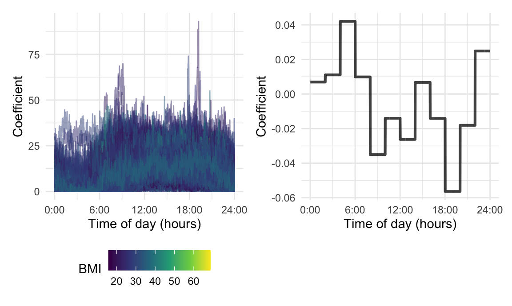
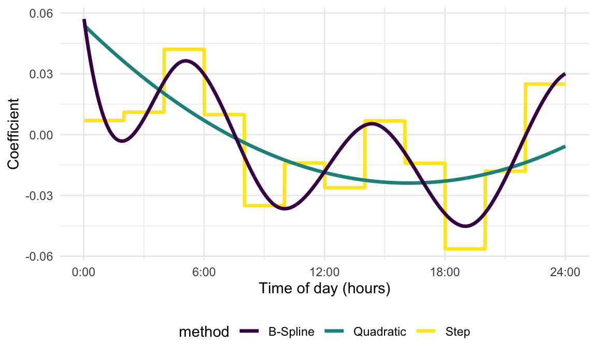
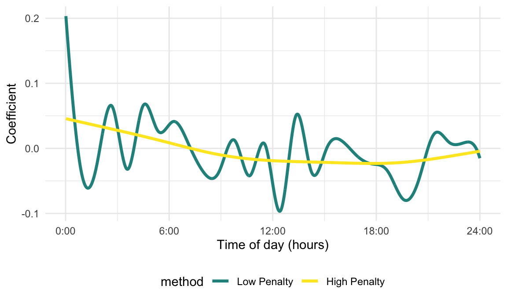
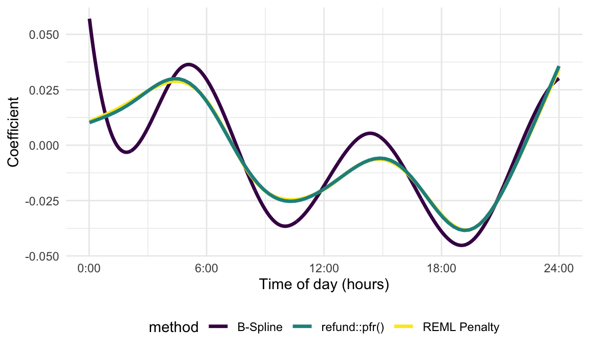
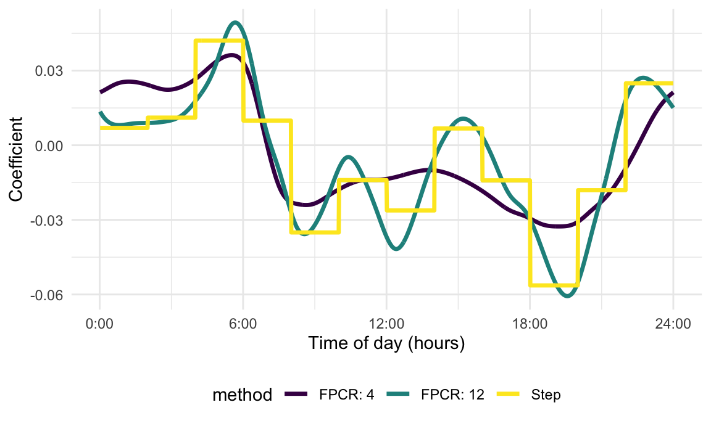
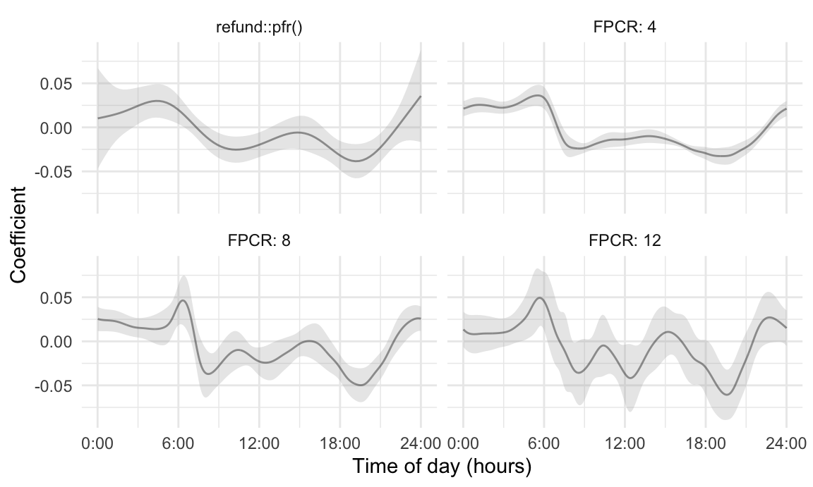
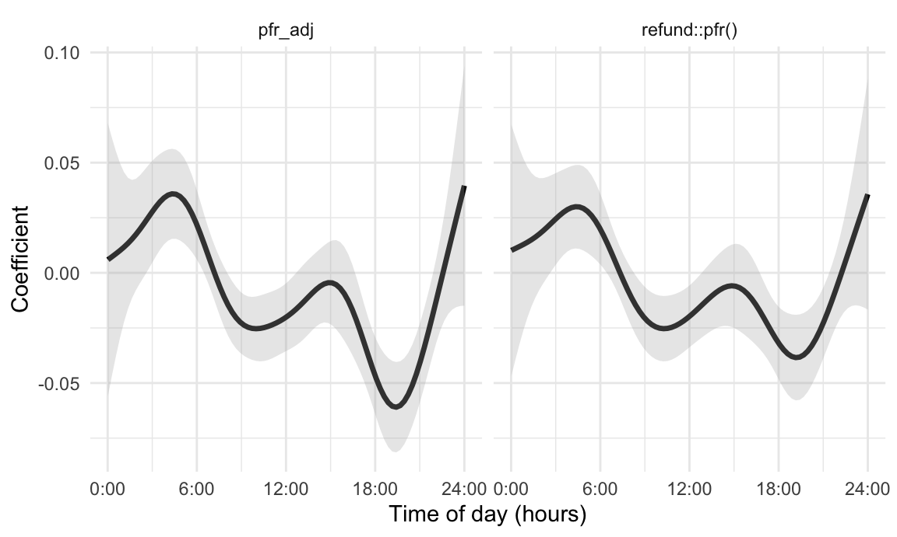
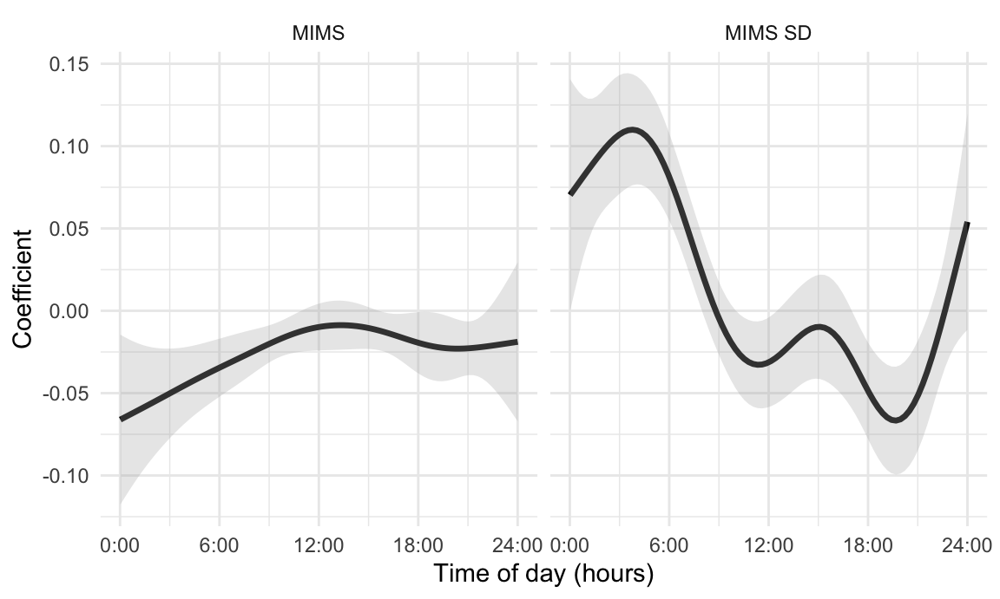
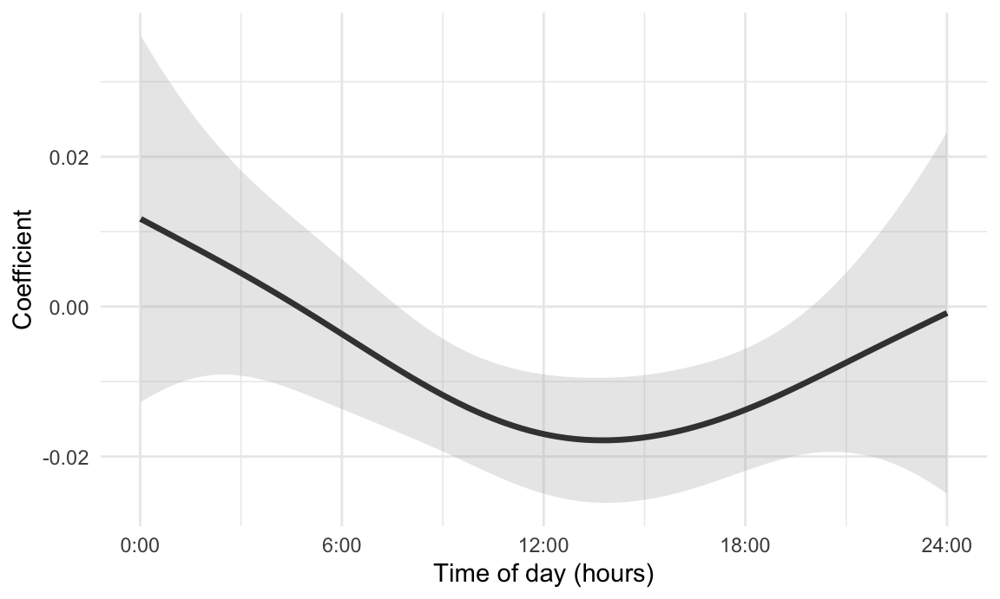

Chapter 4: SoFR
This book Chapter and the code in this page considers functions as
predictors in models with scalar outcomes. We focus on the linear
scalar-on-function regression (SoFR), starting the general motivation
and building intuition using exploratory analyses and careful
interpretation of coefficients. Methods using unpenalized basis
expansions are implemented in traditional software, while estimation and
inference for SoFR using penalized splines is conducted using the
refund and mgcv packages.
Motivation and EDA
Much of this page will use data from the NHANES to illustrate techniques for modeling scalar outcomes using functional predictors. In particular, we will use MIMS profiles as functional predictors of body mass index (BMI) as a continuous outcome. We will begin with a simple approach and show how this is related to more general linear scalar-on-function regression models. For each participant, we will obtain the average MIMS value in each of 12 two-hour bins and then use these bin averages as predictors in a standard linear regression model. This has the advantage of allowing some degree of flexibility in the association between MIMS values and BMI over the course of the day, while not requiring non-standard modeling techniques or interpretations. Indeed, in our experience this kind of approach can be a good starting point in collaborative settings or serve as a useful check on results from more complex approaches.
The code chunk below imports and organizes the processed NHANES data
that will be used in this page. After importing the data, we create a
new variable which indicates whether the participant died within two
years of their inclusion in the study; retain only those variables in
the processed NHANES data that will be relevant for this example; rename
MIMS and MIMS_sd to include the suffix
_mat to indicate these variables are stored as matrices;
restrict the dataset to participants 25 years of age or older; and
ensure that the resulting dataframe has the class
tibble.
nhanes_df =
readRDS(
here::here("data", "nhanes_fda_with_r.rds")) %>%
mutate(
death_2yr = ifelse(event == 1 & time <= 24, 1, 0)) %>%
select(
SEQN, BMI, age, gender, death_2yr,
MIMS_mat = MIMS, MIMS_sd_mat = MIMS_sd) %>%
filter(age >= 25) %>%
drop_na(BMI) %>%
tibble()In the next code chunk, we convert MIMS_mat and
MIMS_mat_sd to tidyfun objects using
tfd()using the arg argument in
tfd() to be explicit about the grid over which functions
are observed.
nhanes_df =
nhanes_df %>%
mutate(
MIMS_tf = matrix(MIMS_mat, ncol = 1440),
MIMS_tf = tfd(MIMS_tf, arg = seq(1/60, 24, length = 1440)),
MIMS_sd_tf = matrix(MIMS_sd_mat, ncol = 1440),
MIMS_sd_tf = tfd(MIMS_sd_tf, arg = seq(1/60, 24, length = 1440)))The next code chunk contains two components. The first component
creates a new data frame containing average MIMS values in two-hour bins
by computing the rolling mean of each MIMS_tf observation
with a bin width of 120 minutes, and then evaluating that rolling mean
at hours \(1, 3, ..., 23\). The result
is saved as MIMS_binned, and for the next step only
BMI and MIMS_binned are retained.
The second component of this code chunk fits the regression of
BMI on these bin averages. The tf_spread()
function produces a wide-format dataframe with columns corresponding to
each bin average in the MIMS_binned variable, and the call
to lm() regresses BMI on all of these
averages.
nhanes_bin_df =
nhanes_df %>%
mutate(
MIMS_binned =
tf_smooth(MIMS_tf, method = "rollmean", k = 120, align = "center"),
MIMS_binned = tfd(MIMS_binned, arg = seq(1, 23, by = 2))) %>%
select(BMI, MIMS_binned)
## setting fill = 'extend' for start/end values.
## Warning: There was 1 warning in `mutate()`.
## ℹ In argument: `MIMS_binned = tf_smooth(MIMS_tf, method = "rollmean", k = 120,
## align = "center")`.
## Caused by warning in `tf_smooth.tfd()`:
## ! non-equidistant arg-values in 'MIMS_tf' ignored by rollmean.
fit_binned =
lm(BMI ~ .,
data = nhanes_bin_df %>% tf_spread(MIMS_binned))We now show the binned predictors and the resulting coefficients
using plotting tools in tidyfun. The
first plot generated in the code chunk below shows the
MIMS_binned variable for the first 500 rows (other data
points are omitted to prevent overplotting). The second plot shows the
coefficients for each bin averaged MIMS values. We create this plot by
tidying the model fit stored in fit_binned and omitting the
intercept term. An hour variable is then created by
manipulating the coefficient names, and upper and lower 95% confidence
bounds for each hour are obtained by adding and subtracting 1.96 times
the standard error from the estimates. We plot the estimates as lines
and points, and add error bars for the confidence intervals. The two
panels are combined using the patchwork
package.
The binned MIMS profiles show expected diurnal patterns of activity, where there is generally lower activity in the night and higher activity in the day. The results of the regression using bin-averaged MIMS values as predictors for BMI (right panel) are consistent with these observed trends. Coefficients for bin averages during the day are generally below zero and some (2-hour intervals between 8-10AM and 6-8PM) are statistically significant.
ggp_binned =
nhanes_bin_df %>%
slice(1:500) %>%
ggplot(aes(y = MIMS_binned, color = BMI)) +
geom_spaghetti() +
geom_meatballs() +
scale_x_continuous(
breaks = seq(0, 24, length = 5),
labels = str_c(seq(0, 24, length = 5), ":00")) +
labs(x = "Time of day (hours)", y = "Binned MIMS")
ggp_coefs =
fit_binned %>%
broom::tidy() %>%
filter(term != "(Intercept)") %>%
mutate(
hour = str_replace(term, "MIMS_binned_", ""),
hour = as.numeric(hour),
ub = estimate + 1.96 * std.error,
lb = estimate - 1.96 * std.error) %>%
ggplot(aes(x = hour, y = estimate)) +
geom_point() + geom_path() +
geom_errorbar(aes(ymin = lb, ymax = ub), width = .5) +
scale_x_continuous(
breaks = seq(0, 24, length = 5),
labels = str_c(seq(0, 24, length = 5), ":00")) +
labs(x = "Time of day (hours)", y = "Coefficient")
ggp_binned + ggp_coefs
We will motivate a shift to scalar-on-function regression by noting that the model using bin averages can be expressed in terms of a functional coefficient expressed as a step function and functional predictors by integrating over their product. This is motivated by the following expression, with technical details provided in the book Chapter text: \[\begin{equation} \sum_{b=1}^{12} \beta_{b} \overline{X}_{ib} \approx \int_{0}^{24} \beta^{step}(s) X_{i}(s) \, ds. \label{eq:ch4_step_int} \end{equation}\]
The code chunk below creates a dataframe that contains the step coefficient function defined above.
stepfun_coef_df =
fit_binned %>%
broom::tidy() %>%
filter(term != "(Intercept)") %>%
select(estimate, std.error) %>%
slice(rep(1:12, each = 120)) %>%
mutate(
method = "Step",
estimate = .5 * estimate,
arg = seq(1/60, 24, length = 1440)) %>%
tf_nest(.id = method)A plot showing the complete (not binned) MIMS_tf
trajectories alongside the step coefficient function is shown below.
Comparing this plot with one above, in which bin averages are shown
alongside regression coefficients, is intended to emphasize that these
approaches are identical up a to a re-scaling of the regression
parameters. Connecting the bin average approach to a truly functional
coefficient is an intuitive starting point for the more flexible linear
SoFR models considered next.
ggp_stepfun_mims =
nhanes_df %>%
slice(1:500) %>%
ggplot(aes(y = MIMS_tf, color = BMI)) +
geom_spaghetti() +
scale_x_continuous(
breaks = seq(0, 24, length = 5),
labels = str_c(seq(0, 24, length = 5), ":00")) +
labs(x = "Time of day (hours)", y = "Coefficient")
ggp_stepfun_coef =
stepfun_coef_df %>%
ggplot(aes(y = estimate)) +
geom_spaghetti(linewidth = 1.1, alpha = .75) +
scale_x_continuous(
breaks = seq(0, 24, length = 5),
labels = str_c(seq(0, 24, length = 5), ":00")) +
labs(x = "Time of day (hours)", y = "Coefficient")
ggp_stepfun_mims + ggp_stepfun_coef
“Simple Linear” Scalar-on-Function
We now introduce the linear scalar-on-function regression model in which there is only one functional predictor and no scalar covariates. This is analogous to ``simple” linear regression, and will be useful for introducing key concepts in interpretation, estimation, and inference for models with functional predictors. Later sections will consider extensions of this approach.
Model specification and interpretation
For participants \(i = 1, \dots, n\), let \(Y_i\) be a scalar response of interest and \(X_{i}: S\rightarrow \mathbb{R}\) be a functional predictor observed over the domain \(S\). The simple linear scalar-on-function regression model is \[\begin{equation} Y_i=\beta_0 + \int_{S} \beta_1 (s)X_{i}(s)\, ds + \epsilon_i \end{equation}\] where \(\beta_0\) is a population-level scalar intercept, \(\beta_1(s): S\rightarrow \mathbb{R}\) is the functional coefficient of interest, and \(\epsilon_i\) is a residual with mean zero and variance \(\sigma^2_{\epsilon}\). This model specification generalizes the specific case where a coefficient function constrained to be a step function approximated a regression model based on bin averages. The coefficient function now can be more flexible, but the interpretation is analogous: \(\beta_1(s)\) defines the weight given to predictor functions at each \(s \in S\), and the product of \(X_{i}(s)\) and \(\beta_1(s)\) is integrated to obtain the overall contribution of the functional term in the model. At each time point, \(\beta(s)\) is the effect on the outcome for a one unit increase in \(X_{i}(s)\) when all other values \(X_{i}(s')\) \(s'\in S, s'\neq s\) are kept unchanged. This interpretation is admittedly somewhat awkward, but unavoidable when regressing a scalar outcome on a functional predictor. Note that the coefficients adjust for effects of all other \(s'\in S\).
The innovation in scalar-on-function regression, compared to nonfunctional models, is a coefficient function that integrates with covariate functions to produce scalar terms in the linear predictor. The corresponding challenge is developing an estimation strategy that minimizes \[\begin{equation}\min_{\beta_0, \beta_{1}(s)} \sum_{i = 1}^{n} \left\{ Y_i - \beta_0 - \int_{S} \beta_1 (s)X_{i}(s)\, ds\right\}^2 \label{eq:ch4_sofr_ss} \end{equation}\] in a way that is flexible and computationally feasible.
Parametric estimation of the coefficient function
Our first approach expands the coefficient function \(\beta_1(s)\) using a relatively low-dimensional basis expansion; doing so leads to a more familiar setting in which scalar basis coefficients are the target of estimation and inference. Specifically, let \(\beta_1(s) = \sum_{k = 1}^{K}\beta_{1k}B_{k}(s)\) where \(B_1(s), \dots, B_{K}(s)\) is a collection of basis functions. Substituting this expansion into the integral term gives \[\begin{equation} \begin{array}{lll} E[Y_i] &=& \beta_0 + \int_S \beta_1 (s)X_{i}(s)\, ds \\ &=& \beta_0 + \sum_{k=1}^{K} \left[ \int_{S} B_{k}(s)X_{i}(s)\, ds\right] \beta_{1k} \\ &=& \beta_0 + \mathbf{C}^t_{i} \boldsymbol{\beta}_{1} \end{array} \end{equation}\] where \(C_{ik} = \int_{S} B_{k}(s)X_{i}(s)\, ds\), \(\mathbf{C}_i = [C_{i1}, \dots, C_{iK}]^{t}\), and \(\boldsymbol{\beta}_1=(\beta_{11},\ldots,\beta_{1K})^t\) is the vector of basis coefficients. The result of the basis expansion for the coefficient function, therefore, is a recognizable multiple linear regression with carefully-defined scalar covariates and corresponding coefficients. Specifically, let \(\mathbf{y}=(y_1,\ldots,y_n)^t\), the matrix \(\mathbf{X}\) be constructed by row-stacking vectors \([1, C_{i1}, \dots, C_{iK}]\), and \(\boldsymbol{\beta} = [\beta_{0}, \beta_{11}, \dots, \beta_{1K}]^{t}\) be the vector of regression coefficients including the population intercept and spline coefficients. This suggests a standard OLS approach to estimating \(\boldsymbol{\beta}\). Note that functional predictors are actually observed over a finite grid, and the definite integrals that define the \(C_{ik}\) are in practice estimated using numeric quadrature.
Many options for the basis have been considered in the expansive literature for SoFR. To illustrate the ideas in this Section, we start with a quadratic basis and obtain the corresponding estimate of the coefficient function \(\beta_{1}(s)\). We define the basis \[\begin{equation} \left\{\begin{array}{lll} B_{1}(s) = 1\;,\\ B_{2}(s) = s\;,\\ B_{3}(s) = s^2\;, \\ \end{array}\right. \label{eq:ch4_quad_basis} \end{equation}\] and, given this, obtain scalar predictors \(C_{ik}\) that can be used in standard linear model software. The basis expansion includes an intercept term, which should not be confused with the model’s intercept, \(\beta_0\). The intercept in the basis expansion allows the coefficient function \(\beta_1(s)\) to shift as needed, while the population intercept is the expected value of the response when the predictor function is zero over the entire domain.
Continuing to focus on BMI as an outcome and MIMS as a functional
predictor, the code chunk below defines the quadratic basis and obtains
the numeric integrals in the \(C_{ik}\). The basis matrix is defined in
terms of arg and given appropriate column names. We
construct the data frame num_int_df which contains the
necessary numeric integrals. We retain the row names of the matrix
product in the resulting dataframe, and convert this to a numeric
variable for consistency with nhanes_df.
epoch_arg = seq(1/60, 24, length = 1440)
B = cbind(1, epoch_arg, epoch_arg^2)
colnames(B) = c("int", "lin", "quad")
num_int_df =
as_tibble(
(nhanes_df$MIMS_mat %*% B) * (1/ 60),
rownames = "SEQN") %>%
mutate(SEQN = as.numeric(SEQN))The next code chunk implements the regression and processes the
results. We first define a new data frame, nhanes_quad_df,
that contains variables relevant for the scalar-on-function regression
of BMI on MIMS trajectories using SoFR and expand the coefficient
function \(\beta_1(s)\) in terms of the
quadratic basis defined in the previous code chunk. This is created by
joining two previously defined dataframes, and keeping only
BMI and the columns corresponding to the numeric integrals
\(C_{ik}\). Using
nhanes_quad_df, we fit a linear regression of BMI on the
\(C_{ik}\); the formula specification
includes a population intercept to reiterate that the model’s intercept
\(\beta_0\) is distinct from the basis
expansion’s intercept, which appears in \(C_{i1}\). Finally, we combine the
coefficient estimates in fit_quad with the basis matrix to
obtain the estimate of the coefficient function. We compute the matrix
product of B and the coefficients of fit_quad
(omitting the population intercept), and convert the result to a
tidyfun object. The coefficient function is stored in a
data frame called quad_coef_df, along with a variable
method with the value quad.
nhanes_quad_df =
left_join(nhanes_df, num_int_df, by = "SEQN") %>%
select(BMI, int, lin, quad)
fit_quad =
nhanes_quad_df %>%
lm(BMI ~ 1 + int + lin + quad, data = .)
quad_coef_df =
tibble(
method = "Quadratic",
estimate = tfd(t(B %*% coef(fit_quad)[-1]), arg = epoch_arg))This general strategy for estimating coefficient functions can be
readily adapted to other basis choices. The next code defines a cubic
B-spline basis with eight degrees of freedom; this is more flexible than
the quadratic basis, while also ensuring a degree of smoothness that is
absent from the stepwise estimate of the coefficient function. Once the
basis is defined, the remaining steps in the code chunk below mirror
those used to estimate the coefficient function using a quadratic basis,
with a small number of minor changes. The basis is generated using the
bs() function in the splines package, and
there are now eight basis functions instead of three. There is a
corresponding increase in the number of columns in
num_int_df and for convenience we write the formula in the
lm() call as BMI ~ 1 + . instead of listing
columns individually. The final step in this code chunk constructs the
estimated coefficient function by multiplying the matrix of basis
functions evaluated over \(\mathbf{s}\)
by the vector of B-spline coefficients; the result is stored in a data
frame called bspline_coef_df, now with a variable
method taking the value B-Spline. The
similarity between this model fitting and the one using a quadratic
basis is intended to emphasize that the basis expansion approach to
fitting a linear SoFR can be easy to implement for a broad range of
basis choices.
B_bspline = splines::bs(epoch_arg, df = 8, intercept = TRUE)
colnames(B_bspline) = str_c("BS_", 1:8)
num_int_df =
as_tibble(
(nhanes_df$MIMS_mat %*% B_bspline) * (1/ 60),
rownames = "SEQN") %>%
mutate(SEQN = as.numeric(SEQN))
nhanes_bspline_df =
left_join(nhanes_df, num_int_df, by = "SEQN") %>%
select(BMI, BS_1:BS_8)
fit_bspline =
lm(BMI ~ 1 + ., data = nhanes_bspline_df)
bspline_coef_df =
tibble(
method = "B-Spline",
estimate =
tfd(t(B_bspline %*% coef(fit_bspline)[-1]), arg = epoch_arg))We show how to display all coefficient function estimates in the next
code chunk. The first step uses bind_rows() to combine data
frames containing the stepwise, quadratic, and B-spline estimated
coefficient functions. The result is a data with three rows, one for
each estimate, and two columns containing the method and
estimate variables. We plot the estimates using
ggplot() and geom_spaghetti() by setting the
aesthetics for y and color to
estimate and method, respectively. In the
resulting plot, the coefficient functions have some broad similarities
across basis specifications. That said, the quadratic basis has a much
higher estimate in the nighttime than other methods because of the
constraints on the shape of the coefficient function. The stepwise
coefficient has the bin average interpretation but the lack of
smoothness across bins is scientifically implausible. Of the
coefficients presented so far, then, the B-spline basis with eight
degrees of freedom is our preference as a way to include both
flexibility and smoothness in the estimate of \(\beta_1(\cdot)\).
bind_rows(stepfun_coef_df, quad_coef_df, bspline_coef_df) %>%
ggplot(aes(y = estimate, color = method)) +
geom_spaghetti(alpha = 1, linewidth = 1.2) +
scale_x_continuous(
breaks = seq(0, 24, length = 5),
labels = str_c(seq(0, 24, length = 5), ":00")) +
labs(x = "Time of day (hours)", y = "Coefficient")
Penalized spline estimation
Our approach to scalar-on-function regression using smoothness penalties relies on key insights that connect functional regression to scatterplot smoothing and mixed models. By expressing the coefficient function using a spline expansion it is possible to cast scalar-on-function regression in terms of a linear regression model. While the design matrix for that model has a specific construction, once it is available, usual model fitting approaches can be used directly. Analogously, the use of penalized splines requires the careful construction of design and penalty matrices, but once these are in place, the techniques for scatterplot smoothing. Critically, this includes casting scalar-on-function regression as a mixed model; this connection makes it possible to use the rich collection of techniques for mixed model estimation and inference for functional regression.
Broadly speaking, in functional regression models we prefer to use rich spline basis expansions because they are flexible and numerically stable. We include penalties that encourage smoothness in the target of estimation, which generally take the form of penalties on the overall magnitude of the squared second derivative of the estimand. This combination results in a quadratic penalty with a tuning parameter that controls the degree of smoothness; higher penalization leads to “flatter” coefficient functions, while lower penalization allows more flexible but “wigglier” coefficients.
As before, let \(\beta_1(s) = \sum_{k = 1}^{K}\beta_{1k}B_{k}(s)\) where \(B_1(s), \dots, B_{K}(s)\) is a collection of basis functions. We add a smoothness-inducing penalty of the form \(\int_S \{\beta_{1}''(s)\}^2 ds\) to the minimization criterion. Intuitively, estimates of \(\beta_{1}(s)\) that include many sharp turns will have squared second derivatives \(\{\beta_{1}''(s)\}^2\) with many large values, while smooth estimates of \(\beta_{1}(s)\) will have second derivatives that are close to 0 over the domain \(S\). To implement the squared second derivative penalty, let \(\mathbf{P}\) be the \(K \times K\) matrix with the \((i,j)^{\text{th}}\) entry equal to \(\int_S B_i''(s)B_j''(s)ds\).
Let \(\mathbf{X}\) be a \(n \times (K+1)\) matrix in which the \(i^{\text{th}}\) row is \([1, C_{i1}, \dots,C_{iK}]\), and let \(\boldsymbol{\beta}\) be the \((K+1)\) dimensional column vector that concatenates the population intercept \(\beta_0\) and the spline coefficients \(\boldsymbol{\beta}_1\). Adding the second derivative penalty yields a penalized sum of squares \[\begin{equation}\min_{\boldsymbol{\beta}}||\mathbf{y}-\mathbf{X}\boldsymbol{\beta}||^2+\lambda \boldsymbol{\beta}^t\mathbf{D}\boldsymbol{\beta}\;. \end{equation}\] Here \(\lambda\geq 0\) is a scalar tuning parameter and \(\mathbf{D}\) is the matrix given by \[\mathbf{D}=\begin{bmatrix} \mathbf{0}_{1 \times 1} & \mathbf{0}_{K \times 1} \\ \;\mathbf{0}_{1 \times K} & \mathbf{P}\\ \end{bmatrix}\;,\] where \(\mathbf{0}_{a\times b}\) is a matrix of zero entries with \(a\) rows and \(b\) columns. For fixed values of \(\lambda\), a closed form solution for \(\widehat{\boldsymbol{\beta}}\) is \(\widehat{\boldsymbol{\beta}}=(\mathbf{X}^t\mathbf{X}+\lambda \mathbf{D})^{-1}\mathbf{X}^t\mathbf{y}\). Varying \(\lambda\) from 0 to \(\infty\) will induce no penalization and full penalization, respectively, and choosing an appropriate tuning parameter is an important practical challenge. As elsewhere in this Chapter, though, we emphasize that the familiar form should not mask the novelty and innovation of this model, which implements penalized spline smoothing to estimate the coefficient function in a scalar-on-function regression.
We illustrate these ideas in the next code chunk, which continues to
use BMI as an outcome and MIMS as a functional predictor. The code draws
on elements that have been seen previously. We first define a B-spline
basis with 30 degrees of freedom evaluated over the finite grid
arg. Using functionality in the splines2
package, we obtain the second derivative of each spline basis function
evaluated over the same finite grid. The elements of the penalty matrix
\(\mathbf{P}\) are obtained through
numeric approximations to the integrals. The design matrix \(\mathbf{X}\) is obtained by adding a column
taking the value \(1\) everywhere to
the terms \(C_{ik}\). Next, we
construct the matrix \(\mathbf{D}\).
The response vector \(\mathbf{y}\) is
extracted from nhanes_df and we choose high and low values
for the tuning parameter \(\lambda\).
Given all of these elements, we estimate the coefficient vector \(\boldsymbol{\beta}\) to obtain
coef_high and coef_low.
B_bspline = splines::bs(epoch_arg, df = 30, intercept = TRUE)
sec_deriv = splines2::bSpline(epoch_arg, df = 30, intercept = TRUE, derivs = 2)
P = t(sec_deriv) %*% sec_deriv * (1 / 60)
X = cbind(1, (nhanes_df$MIMS_mat %*% B_bspline) * (1 / 60))
D = rbind(0, cbind(0, P))
y = nhanes_df$BMI
lambda_high = 10e6
lambda_low = 100
coef_high = solve(t(X) %*% X + lambda_high * D) %*% t(X) %*% y
coef_low = solve(t(X) %*% X + lambda_low * D) %*% t(X) %*% yThe estimated coefficient functions that correspond to the estimates
in coef_high and coef_low can be produced
through simple modifications to the previous code. A figure below shows
the resulting coefficient functions. Note that we specify the color for
these curves for consistency with later plots.

Recasting the penalized sum of squares as a mixed model allows the
data-driven estimation of tuning parameters; more broadly, this opens
the door to using a wide range of methods for mixed model estimation and
inference in functional regression settings. Below, we construct the
design matrix \(\mathbf{C}\) using
numeric integration. The penalty matrix \(\mathbf{P}\), which contains the numeric
integral of the squared second derivative of the basis functions, is
reused from a prior code chunk. We pass these as arguments into
mgcv::gam() by specifying C in the formula
that defines the regression structure, and then use the
paraPen argument to supply our penalty matrix
P for the design matrix C. Lastly, we specify
the estimation method to be REML.
C = (nhanes_df$MIMS_mat %*% B_bspline) * (1 / 60)
fit_REML_penalty =
gam(y ~ 1 + C, paraPen = list(C = list(P)),
method = "REML")Code that multiplies the basis functions by the resulting spline coefficients to obtain the estimated coefficient function is shown below. We plot the result and include previous penalized estimates, based on high and low values of the tuning parameter \(\lambda\), which over- and under-smoothed the coefficient function. The data-driven approach to tuning parameter selection yields an estimate that is smooth but time-varying.

Many of the strengths of the mgcv package can be
leveraged through the refund package, which adds
functionality, quality of life features, and user interfaces relevant to
FDA. For SoFR, this means that instead of building models using
knowledge of the linear algebra underlying penalized spline estimation,
we instead only require correctly specified data structures and syntax
for refund::pfr(). In the code chunk below, we regress BMI
on MIMS using the matrix variable MIMS_mat using a the
linear specification in lf(). We additionally indicate the
grid over which predictors are observed, and specify the use of REML to
choose the tuning parameter. The next component of this code chunk
extracts the resulting coefficient and structures it for plotting.
pfr_fit =
pfr(
BMI ~ lf(MIMS_mat, argvals = seq(1/60, 24, length = 1440)),
method = "REML", data = nhanes_df)
pfr_coef_df =
coef(pfr_fit) %>%
mutate(method = "refund::pfr()") %>%
tf_nest(.id = method, .arg = MIMS_mat.argvals) %>%
rename(estimate = value)The next figure displays results obtained using
mgcv::gam() and refund::pfr(); there are some
minor differences in the default model implementations and these results
do not align perfectly, although they are very similar and can be made
exactly the same. For reference, we also show the coefficient function
based on an unpenalized B-spline basis with eight degrees of
freedom.
bind_rows(bspline_coef_df, REML_penalty_df, pfr_coef_df) %>%
ggplot(aes(y = estimate, color = method)) +
geom_spaghetti(alpha = 1, linewidth = 1.2) +
scale_x_continuous(
breaks = seq(0, 24, length = 5),
labels = str_c(seq(0, 24, length = 5), ":00")) +
labs(x = "Time of day (hours)", y = "Coefficient")
## Warning in vec_ptype2_tfd_tfd(x, y, ...): concatenating functions on different
## grids.
## Warning in vec_ptype2_tfd_tfd(x, y, ...): inputs have different resolutions,
## result has resolution =0.001
Data-driven Basis Expansion
To this point, we have developed unpenalized and penalized estimation strategies using basis expansions constructed independently of observed data – step functions, polynomial bases, B-splines. The use of a data-driven basis obtained through FPCA is a popular alternative, and indeed was among the first approaches to SoFR. This approach, sometimes referred to as “Functional Principal Components Regression” (FPCR), has useful numerical features that can make it an appealing option in some practical settings.
The code chunk below implements the scalar-on-function regression of
BMI on MIMS using a data-driven basis. In the first lines of code, we
use the function refunder::rfr_fpca() to conduct FPCA. This
function takes a tf vector as an input; for data observed
over a regular grid, this serves as a wrapper for
fpca.face(). We specify {npc = 4} to return \(K = 4\) principal components. The remainder
of this code chunk is essentially copied from above, with naming
conventions similar to previous code. We regress BMI on
covariates \(C_{ik}\) obtained through
numeric integration, and save this as .
nhanes_fpca =
rfr_fpca("MIMS_tf", data = nhanes_df, npc = 4)
## Warning in new_tfb_fpc(data, domain = domain, method = method, resolution = resolution, : domain for tfb_fpc can't be larger than observed arg-range -- extrapolating FPCs is a bad idea.
## domain reset to [0.017,24]
B_fpca = nhanes_fpca$efunctions * sqrt(60)
colnames(B_fpca) = str_c("efunc_", 1:4)
num_int_df =
as_tibble(
(nhanes_df$MIMS_mat %*% B_fpca) * (1/60),
rownames = "SEQN") %>%
mutate(SEQN = as.numeric(SEQN))
nhanes_fpcr_df =
left_join(nhanes_df, num_int_df, by = "SEQN") %>%
select(BMI, efunc_1:efunc_4)
fit_fpcr_int =
lm(BMI ~ 1 + ., data = nhanes_fpcr_df)We used numerical integration to obtain the \(C_{ik}\) in the previous code, but an important advantage of FPCR is that principal component scores are the projection of centered functional observations onto eigenfunctions. That is, we can use FPC scores as predictors rather than obtaining values through numeric integration.
The fact that FPCR can be carried out using a regression on FPC scores directly is a key strength. There are many practical settings where the numeric integration used to construct the design matrices throughout this chapter – for pre-specified and data-driven basis expansions – is not possible. For functional data that are sparsely observed or that are measured with substantial noise, numeric integration can be difficult or impossible. In both those settings, FPCA methods can produce estimates of eigenfunctions and the associated scores and thereby enable scalar-on-function regression in a wide range of real-world settings. At the other extreme, for very high-dimensional functional observations, it may be necessary to conduct dimension reduction as a pre-processing step to reduce memory and computational burdens. The FPCR gives an interpretable scalar-on-function regression in this setting as well. That said, because FPCR is a regression on FPC scores, only effects that are captured by the directions of variation contained in the FPCs can be accounted for using this approach. Moreover, the smoothing of the estimated coefficient function depends on the intrinsic choice of the number of eigenfunctions, \(K\). This tends to be less problematic when one is interested in prediction performance, but may have large effects on the estimation of the \(\beta_1(s)\) coefficient.
In the code below, we extract scores from the FPCA
object nhanes_fpca obtained in a previous code chunk.
Mirroring code elsewhere, we create a dataframe containing the scores;
merge this with nhanes_df and retain BMI and
the predictors of interest; and fit a linear model, storing the results
as fit_fpcr_score to reflect that we have performed FPCR
using score estimates.
C = nhanes_fpca$scores * (sqrt(60) / 60)
colnames(C) = str_c("score_", 1:4)
rownames(C) = nhanes_df$SEQN
nhanes_score_df =
as_tibble(
C, rownames = "SEQN") %>%
mutate(SEQN = as.numeric(SEQN))
nhanes_fpcr_df =
left_join(nhanes_df, nhanes_score_df, by = "SEQN") %>%
select(BMI, score_1:score_5)
fit_fpcr_score =
lm(BMI ~ 1 + ., data = nhanes_fpcr_df)A table showing coefficient estimates from fit_fpcr_int
and fit_fpcr_score is shown next. As expected, the
intercepts from the two models differ – one is based on centered \(X_{i}(s)\) covariate functions and the
other is not – but basis coefficients are nearly identical.
Throughout this Section, we have deferred the important
methodological consideration of how to choose the truncation level \(K\). Because our estimation approach does
not include any explicit smoothness constraints, the flexibility of the
underlying basis controls the smoothness of the resulting coefficient
function. For that reason, \(K\) is
effectively a tuning parameter. The figure below illustrates this point
by showing the coefficient function with \(K=4\) as well as the coefficient function
with \(K=12\). The previous code could
be modified for this setting, but we implement the helper function nhanes_fpcr to do the model
fitting. We also show the coefficient function expressed as a step
function for reference. The coefficient function with \(K=4\) is, unsurprisingly, the smoothest,
while the coefficient function with \(K =
12\) more closely tracks the step coefficient function.
## Warning: There were 2 warnings in `mutate()`.
## The first warning was:
## ℹ In argument: `fit = map(npc, nhanes_fpcr, df = nhanes_df)`.
## Caused by warning in `new_tfb_fpc()`:
## ! domain for tfb_fpc can't be larger than observed arg-range -- extrapolating FPCs is a bad idea.
## domain reset to [0.017,24]
## ℹ Run `dplyr::last_dplyr_warnings()` to see the 1 remaining warning.
Inference in “Simple” Linear Scalar-on-Function Regression
We now turn our attention to inference. First, we will develop pointwise confidence intervals that are not adjusted for correlation and multiplicity (not CMA), as defined in elsewhere. We refer to these as “unadjusted” confidence intervals, even though they are adjusted for other scalar and/or functional covariates. Leter we will discuss correlation (to account for the correlation of \(\widehat{\beta}_1(s_j)\)) and multiplicity (to account for the multiple locations \(s_j\), \(j=1,\ldots,p\)) adjusted confidence intervals. We refer to this double adjustment as correlation and multiplicity adjusted (CMA) inference.
Unadjusted Inference for Functional Predictors
Our approach to unadjusted inference assumes Normality and constructs \((1-\alpha)\) confidence intervals of the form \[\widehat{\beta}_1(s) \pm z_{1-\alpha / 2} \sqrt{\mbox{Var}\{\widehat{\beta}_1(s)\}}\] where \(z_{\alpha}\) is the \(\alpha\) quantile of a standard Normal distribution. Recall that the coefficient \(\widehat{\beta}_1(s)\) was expanded in a basis \(\widehat{\beta}_1(s)=\mathbf{B}(s)\boldsymbol{\beta}_1\); the variance \(\mbox{Var}\{\widehat{\beta}_1(s)\}\) at any point \(s\in S\) can be obtained by combining the basis with the variance of the estimated coefficients. This is very useful because the basis coefficient vector \(\widehat{\boldsymbol{\beta}}_1\) is finite and quite low dimensional.
When using a fixed basis and no penalization, the resulting inference
is familiar from usual linear models. After constructing the design
matrix \(\mathbf{X}\) and estimating
all model coefficients, \(\boldsymbol{\beta}_1\), using ordinary
least squares and the error variance, \(\sigma_{\epsilon}^2\), based on model
residuals, \(\mbox{Var}(\widehat{\boldsymbol{\beta}}_1)\)
can be extracted from \(\mbox{Var}(\widehat{\boldsymbol{\beta}}_1) =
\widehat{\sigma}_{\epsilon}^2 \left(\mathbf{X}^{t}\mathbf{X}
\right)\). Indeed, this can be quickly illustrated using
previously fit models; in the code chunk below, we use the
vcov() function to obtain \(\mbox{Var}(\widehat{\boldsymbol{\beta}})\)
from fit_fpcr_int, the linear model object for FPCR with
\(K = 4\). We remove the row and column
corresponding to the population intercept, and then pre- and
post-multiply by the FPCA basis matrix \(\mathbf{B}(\mathbf{s})\) stored in
B_fpca. The resulting covariance matrix is \(1440 \times 1440\), and has the variances
\(\mbox{Var}\{\widehat{\beta}_1(s)\}\)
for each value in the observation grid \(s\in\mathbf{s}\) on the main diagonal. The
final part of the code chunk creates the estimate \(\widehat{\boldsymbol{\beta}}_{1}(s)\) as a
tf object; uses similar code to obtain the pointwise
standard error (as the square root of entries on the diagonal of the
covariance matrix); and constructs upper and lower bounds for the 95%
confidence interval.
var_basis_coef = vcov(fit_fpcr_int)[-1,-1]
var_coef_func = B_fpca %*% var_basis_coef %*% t(B_fpca)
fpcr_inf_df =
tibble(
method = c("FPCR: 5"),
estimate = tfd(t(B_fpca %*% coef(fit_fpcr_int)[-1]), arg = epoch_arg),
se = tfd(sqrt(diag(var_coef_func)), arg = epoch_arg)
) %>%
mutate(
ub = estimate + 1.96 * se,
lb = estimate - 1.96 * se) The process for obtaining confidence intervals for penalized spline
estimation is conceptually similar. Again, inference is built around the
covariance of the basis coefficients and the primary difference is in
the calculation of that variance. The necessary step is to perform
inference on fixed and random effects in a mixed model. Later we will
explore this in detail; for now, we will use the helpful wrapper
pfr() for inference. Indeed, the object
pfr_coef_df, obtained in a previous code chunk using
coef(pfr_fit), already includes a column se
containing the pointwise standard error. In the code chunk below, we use
this column to construct upper and lower bounds of a 95% confidence
interval.
pfr_inf_df =
pfr_coef_df %>%
mutate(
ub = estimate + 1.96 * se,
lb = estimate - 1.96 * se) Our next code chunk will plot the estimates and confidence intervals
created in the previous code. We combine the dataframes containing
estimates and confidence bounds for the penalized spline and FPCR
methods using \(K = 4, 8, 12\). The
result is plotting using familiar tools from ggplot and
tidyfun, and we use geom_errorband() to plot
the confidence bands.
## Warning: There were 3 warnings in `mutate()`.
## The first warning was:
## ℹ In argument: `fit = map(npc, nhanes_fpcr, df = nhanes_df)`.
## Caused by warning in `new_tfb_fpc()`:
## ! domain for tfb_fpc can't be larger than observed arg-range -- extrapolating FPCs is a bad idea.
## domain reset to [0.017,24]
## ℹ Run `dplyr::last_dplyr_warnings()` to see the 2 remaining warnings.
## Warning in vec_ptype2_tfd_tfd(x, y, ...): concatenating functions on different
## grids.
## Warning in vec_ptype2_tfd_tfd(x, y, ...): inputs have different resolutions,
## result has resolution =0.01
## Warning in vec_ptype2_tfd_tfd(x, y, ...): concatenating functions on different
## grids.
## Warning in vec_ptype2_tfd_tfd(x, y, ...): inputs have different resolutions,
## result has resolution =0.01
## Warning in vec_ptype2_tfd_tfd(x, y, ...): concatenating functions on different
## grids.
## Warning in vec_ptype2_tfd_tfd(x, y, ...): inputs have different resolutions,
## result has resolution =0.01
## Warning in vec_ptype2_tfd_tfd(x, y, ...): concatenating functions on different
## grids.
## Warning in vec_ptype2_tfd_tfd(x, y, ...): inputs have different resolutions,
## result has resolution =0.01
Extensions of linear SoFR
In this Section, we will consider several obvious and necessary
extensions of the “simple” linear model. We will focus on implementation
of models using pfr(). Note that this page only deals with
cross-sectional settings; multilevel and longitudinal functional data
are the subject of other pages. The emphasis here is on the fact that
these extensions can be implemented using small changes to the familiar
code of functional regression and attempts to make SoFR models as easy
to fit as linear and semiparametric models.
Adding scalar covariates
Most real-data analyses that involve a functional predictor will also include one or more scalar covariates. All methods in the previous section can easily be adapted to this setting. To be explicit, we are now interested in fitting models of the form \[\begin{equation} Y_i=\beta_0 + \int_{S} \beta_1 (s)X_{i}(s)\, ds + \bm{Z}_i^t\bm{\gamma} + \epsilon_i\;, \end{equation}\] where \(\bm{Z}_i\) is a \(Q\times 1\) dimensional vector of scalar covariates for subject \(i\) and \(\bm{\gamma}\) is the vector of associated coefficients.
The code chunk below regresses BMI on
MIMS_mat as a functional predictor and age and
gender as scalar covariates using pfr();
recall that pfr() expects functional predictors to be
structured as matrices. Except for the addition of age and
gender in the formula, all other elements of the model
fitting code have been seen before.
pfr_adj_fit =
pfr(
BMI ~ age + gender + lf(MIMS_mat, argvals = seq(1/60, 24, length = 1440)),
data = nhanes_df)Moreover, all subsequent steps build directly on previous code
chunks. Functional coefficients and standard errors can be extracted
using coef and combined to obtain confidence intervals, and
then plotted using tools from tidyfun or other graphics
packages. Estimates and inference for non-functional coefficients can be
obtained using summary() on the fitted model object.

Multiple functional predictors
It is frequently the case that more than one functional predictor is available; often the functions are observed over the same domain, but this is not necessary. The goal is to fit a model of the form \[\begin{equation} Y_i=\beta_0 + \sum_{r=1}^{R} \int_{S_r} \beta_r(s) X_{ir}(s)\, ds + \bm{Z}_i^t\bm{\gamma} + \epsilon_i \end{equation}\] where \(X_{ir}(s)\), \(1 \leq r \leq R\) are functional predictors observed over domains \(S_r\) with associated coefficient functions \(\beta_r(s)\). The interpretation of the coefficients here is similar to that elsewhere; it is possible to interpret the effect of \(X_{ir}(s)\) on the expected value of \(Y_i\) through the coefficient \(\beta_r(s)\), keeping all other functional and non-functional predictors fixed. As when adding scalar predictors to the “simple” scalar-on-function regression model, techniques described previously can be readily adapted to this setting.
We will again use pfr() to implement an example of this
model. The code chunk below regresses BMI on scalar
covariates age and gender. The functional
predictor MIMS_mat is familiar from many analyses in this
Section and is used here. We add the functional predictor
MIMS_sd_mat, which is the standard deviation of MIMS values
taken across several days of observation for each participant, also
stored as a matrix. MIMS_sd_mat is included in the formula
specification exactly as MIMS_mat has been in previous code
chunks.
pfr_mult_fit =
pfr(
BMI ~ age + gender +
lf(MIMS_mat, argvals = seq(1/60, 24, length = 1440)) +
lf(MIMS_sd_mat, argvals = seq(1/60, 24, length = 1440)),
data = nhanes_df)The subsequent extraction of estimates and inference is almost
identical – with the key addition of specifying select = 1
or select = 2 in the call to coef() to extract
values for MIMS_mat and MIMS_sd_mat,
respectively.
pfr_mult_inf_df =
bind_rows(
coef(pfr_mult_fit, select = 1) %>% mutate(coef = "MIMS") %>% rename(argvals = MIMS_mat.argvals),
coef(pfr_mult_fit, select = 2) %>% mutate(coef = "MIMS SD") %>% rename(argvals = MIMS_sd_mat.argvals)) %>%
rename(estimate = value) %>%
mutate(
ub = estimate + 1.96 * se,
lb = estimate - 1.96 * se) %>%
tf_nest(.id = coef, .arg = argvals)
pfr_mult_inf_df %>%
ggplot(aes(y = estimate)) +
geom_spaghetti(alpha = 1, linewidth = 1.2) +
geom_errorband(aes(ymax = ub, ymin = lb), linetype = 0) +
facet_grid(.~coef) +
scale_x_continuous(
breaks = seq(0, 24, length = 5),
labels = str_c(seq(0, 24, length = 5), ":00")) +
labs(x = "Time of day (hours)", y = "Coefficient")
Exponential family outcomes
Outcomes that follow binomial, Poisson, and other exponential family
distributions are common in practice, and require the use of a
generalized linear model framework for estimation and inference. This
is, of course, a natural extension to the estimation methods we favor.
For example, given a binary outcome \(Y_i\), scalar predictors \(\bm{Z}_i\), and a functional predictor
\(X_i(s)\), one can pose the logistic
scalar-on-function regression \(E[Y_i|\{X_{i}(s):s\in S\},\mathbf{Z}_i] =
\mu_i\), where \[\begin{equation}
g(\mu_i)= \beta_0 + \int_{S} \beta_1 (s)X_{i}(s)ds +
\bm{Z}_i^t\bm{\gamma}\;, \label{eq:SoFR_mgcv}
\end{equation}\] where \(g(\cdot)\) is the logit link function.
Model parameters can be interpreted as log odd ratios or exponentiated
to obtain odds ratios. Expanding the coefficient function in terms of a
basis expansion again provides a mechanism for estimation and inference.
Rather than minimizing a sum of squares or the penalized equivalent, one
now minimizes a (penalized) log likelihood. Tuning parameters for
penalized approaches can be selected in a variety of ways, but we
continue to take advantage of the connection between roughness penalties
and mixed model representations. Non-penalized approaches can be fit
directly using glm(), while penalized models are available
through mgcv::gam() or pfr().
In the code chunk below, we fit a logistic scalar-on-function
regression in the NHANES dataset. Our binary outcome is two-year
mortality, with the value 0 indicating that the participant survived two
years after enrollment. We adjust for age, gender, and BMI, and focus on
MIMS as a functional predictor. The model specification using
pfr() sets the argument family to
binomial(), but other aspects of this code are drawn
directly from prior examples.
pfr_mort_fit =
pfr(
death_2yr ~ age + gender + BMI +
lf(MIMS_mat, argvals = seq(1/60, 24, length = 1440)),
family = binomial(), method = "REML", data = nhanes_df)Extracting estimated coefficient functions and conducting inference
can be accomplished using the coef() function to obtain
estimates and pointwise standard errors. Post-processing to construct
confidence intervals is direct, and these can be inverse-logit
transformed to obtain estimates and inference as odds ratios.
pfr_mort_inf_df =
coef(pfr_mort_fit) %>%
rename(estimate = value) %>%
mutate(
method = "pfr_adj",
ub = estimate + 1.96 * se,
lb = estimate - 1.96 * se) %>%
tf_nest(.id = method, .arg = MIMS_mat.argvals)
pfr_mort_inf_df %>%
ggplot(aes(y = estimate)) +
geom_spaghetti(alpha = 1, linewidth = 1.2) +
geom_errorband(aes(ymax = ub, ymin = lb)) +
scale_x_continuous(
breaks = seq(0, 24, length = 5),
labels = str_c(seq(0, 24, length = 5), ":00")) +
labs(x = "Time of day (hours)", y = "Coefficient")